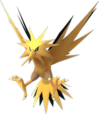

-
pikachu
HP 300

Decrição
Pikachu é uma espécie fictícia pertencente à franquia de mídia Pokémon da Nintendo. Ele apareceu pela primeira vez no Japão em 1996, nos jogos eletrônicos Pokémon Red and Blue, e foi criado por Satoshi Tajiri. é uma espécie fictícia pertencente à franquia de mídia Pokémon da Nintendo. Ele apareceu pela primeira vez no Japão em 1996, nos jogos eletrônicos Pokémon Red and Blue, e foi criado por Satoshi Tajiri.
-
Charizard
HP 800

Descrição
Charizard é uma criatura fictícia da franquia Pokémon que pertence a Nintendo e Game Freak. Criado por Ken Sugimori, Charizard apareceu pela primeira vez nos jogos Pokémon Red e Blue e subsequentes sequelas. Eles apareceram também em várias mercadorias, títulos de spinoff e adaptações animadas e impressas da franquia. Shin-ichiro Miki, o ator que faz a voz do James na versão japonesa do anime, é quem dá voz ao Charizard em versões japonesas e em inglês do anime. Sendo um dracônico Pokémon laranja, Charizard é a forma evoluída de Charmeleon e a evolução final de Charmander.
-
Mewtwo
HP 2000

Descrição
Mewtwo é uma criatura oficial da franquia Pokémon, criada pela Nintendo e pela Game Freak. Criado por Ken Sugimori, apareceu pela primeira vez nos jogos de vídeogame Pokémon Red e Blue e suas seqüencias, e mais tarde apareceu em vários produtos, títulos de spin-off, assim como adaptações de animação da franquia. Masachika Ichimura dublou o Mewtwo em japonês, e a versão mais jovem do Pokémon é dublado por Fujiko Takimoto no CD Drama Sound Picture Box: Mewtwo's Origin e Showtaro Morikubo na adaptação em anime
-
blastoise
HP 1000

Descrição
Blastoise é um grande Pokémon tartaruga bípede. Seu corpo é azul e é principalmente escondido por sua casca dura e marrom. Esta concha tem uma parte inferior de cor creme e uma crista branca que circunda seus braços e separa as metades superior e inferior. Dois poderosos canhões de água residem no topo de sua concha sobre seus ombros. Esses canhões podem ser estendidos ou retirados.
-
Venusaur
HP 600
Descrição
Venasaur é um Pokémon quadrúpede com pele verde acidentada, e azulada. Ele tem olhos pequenos e circulares vermelhos, dois dentes pontiagudos em sua mandíbula superior, e quatro dentes pontiagudos em sua mandíbula inferior. Tem três dedos com garras em cada pé. Possui um grande coqueiro em suas costas.
-
Zapdos
HP 1700
Descrição
Zapdos é um grande Pokémon aviário com plumagem predominantemente amarela. Tem olhos pequenos e triangulares com preto ao redor e um bico longo, fino e laranja claro. Suas asas e cauda são uma massa de penas pontiagudas e há penas pretas cobrindo a parte de trás de suas asas e as penas internas da cauda. Uma grande crista de penas pontiagudas envolve sua cabeça. Suas coxas são bronzeadas e tem pernas finas e alaranjadas. Possui pés com três dedos voltados para frente e um para trás; cada dedo tem uma garra curta.
-
Articuno
HP 1700
Descrição
Articuno é um grande Pokémon aviário com plumagem predominantemente azul celeste e asas que dizem ser feitas de gelo. Em sua testa há uma crista que consiste em três penas em forma de losango azuis mais escuras. Tem olhos vermelhos circulares, um bico cinza curto e pernas cinzas longas e finas. Cada pé tem três dedos voltados para a frente e um voltado para trás. Em seu peito há uma massa de penas azuis pálidas e felpudas. Sua cauda longa, semelhante a uma serpentina, é mais longa que seu corpo e tem o mesmo tom de azul de sua crista.
-
Entei
HP 1700
Descrição
Entei é um Pokémon enorme, leonino e quadrúpede com algumas qualidades de mastim. Ele está coberto de pêlo marrom e uma longa nuvem de fumaça cinza-clara que percorre todo o seu dorso. Tem placas cinzentas em ambos os lados da nuvem e uma placa sob o pêlo creme da barriga em seu peito. Entei tem patas cinza com almofadas marrons e faixas pretas em forma de punho nas pernas. Ambas as patas dianteiras abrigam três pequenas garras retráteis brancas, que podem ser vistas em batalha ou no Pokémon Camp.
-
Mew
HP 2000
Descrição
Mew é um Pokémon bípede rosa com características de mamífero. Tem um focinho arredondado e largo; orelhas triangulares; e grandes olhos azuis. Tem braços curtos com patas de três dedos e patas traseiras grandes com marcas ovais nas solas. Sua cauda é longa e fina com uma ponta ovóide. Sua pelagem é tão fina e fina que só pode ser vista ao microscópio. Diz-se que Mew tem o DNA de cada Pokémon contido em seu corpo, permitindo que Mew aprenda e use qualquer ataque.